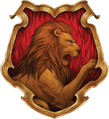
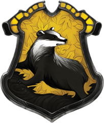

CASAS DE HOGWARTS
GRYFFINDOR

«Puedes pertenecer a Gryffindor, donde habitan los valientes. Su osadía, temple y
caballerosidad ponen aparte a los de Gryffindor.»
Gryffindor es una de las cuatro casas del Colegio Hogwarts de
Magia y
Hechicería, fundada por
Godric Gryffindor. Su animal emblemático es el león y sus colores son el rojo
escarlata y el
dorado. Minerva McGonagall es la más reciente jefa de la casa. Sir Nicholas de Mimsy-Porpington
también conocido como "Nick Casi Decapitado" es el fantasma de la casa. Las principales
características de los Gryffindor son el coraje y la caballerosidad.
El elemento de Gryffindor es el fuego, ya que se lo asocia al valor y coraje de esta casa. Además, el fuego simboliza el honor en variadas ocasiones, lo cual también puede aplicar para Gryffindor.
La sala común de Gryffindor está localizada en la Torre de Gryffindor, la entrada está localizada en el séptimo piso y está custodiada por el retrato de la Dama Gorda, que utiliza un vestido rosa.
El elemento de Gryffindor es el fuego, ya que se lo asocia al valor y coraje de esta casa. Además, el fuego simboliza el honor en variadas ocasiones, lo cual también puede aplicar para Gryffindor.
La sala común de Gryffindor está localizada en la Torre de Gryffindor, la entrada está localizada en el séptimo piso y está custodiada por el retrato de la Dama Gorda, que utiliza un vestido rosa.
HUFFLEPUFF

«Puedes pertenecer a Hufflepuff donde son justos y leales. Esos perseverantes Hufflepuff de
verdad no temen el trabajo pesado.»
Hufflepuff es una de las cuatro casas del Colegio Hogwarts de
Magia y
Hechicería . Su fundadora es la bruja medieval Helga Hufflepuff. La
jefa de la casa es Pomona
Sprout. El fraile gordo es el fantasma de la casa. Hufflepuff es la más inclusiva de las
cuatro casas; el trabajo duro, la paciencia, la amistad y la honestidad son sumamente necesarias
para ser miembros. Su animal emblemático es el tejón y sus colores son el amarillo y
negro.
Hufflepuff correspondió aproximadamente al elemento tierra,y es por eso que se eligieron los colores de la Casa: el amarillo representaba el trigo, mientras que el negro era emblemático de la tierra.
A la Sala Común de Hufflepuff se accede desde el mismo pasillo que a las cocinas de Hogwarts. Pasando delante del bodegón que forma la entrada a las cocinas, se encontrará una gran pila de barriles en un hueco oscuro en la piedra a la derecha del corredor. El segundo barril empezando por abajo, en medio de la segunda fila, se abrirá si se golpea al ritmo de Helga Hufflepuff.
Hufflepuff correspondió aproximadamente al elemento tierra,y es por eso que se eligieron los colores de la Casa: el amarillo representaba el trigo, mientras que el negro era emblemático de la tierra.
A la Sala Común de Hufflepuff se accede desde el mismo pasillo que a las cocinas de Hogwarts. Pasando delante del bodegón que forma la entrada a las cocinas, se encontrará una gran pila de barriles en un hueco oscuro en la piedra a la derecha del corredor. El segundo barril empezando por abajo, en medio de la segunda fila, se abrirá si se golpea al ritmo de Helga Hufflepuff.
RAVENCLAW
«O tal vez a la antigua sabiduría de Ravenclaw, Si tienes una mente dispuesta,
porque los de inteligencia y erudición siempre encontrarán allí a sus semejantes.»
Ravenclaw es una de las cuatro casas del Colegio Hogwarts de
Magia
y Hechicería. Fue fundada por Rowena Ravenclaw, quién tuvo una hija,
cuyo fantasma es la Dama
Gris que a su vez es el fantasma de Ravenclaw. Se dice que fue Rowena Ravenclaw quien le puso el
nombre al castillo.
Los miembros de esta casa se caracterizan por su ingenio, aprendizaje y sabiduría. El símbolo
animal emblemático es el águila, y el azul y el bronce son sus colores. El Jefe de Ravenclaw
actualmente es Filius Flitwick.
Ravenclaw corresponde aproximadamente al elemento aire,y es por eso que se eligieron los colores de la Casa; el azul y el bronce
a sala común de Ravenclaw se encuentra en una de las torres del castillo, es amplia y circular, para llegar a la sala se debe subir por una escalera en caracol muy angosta. A diferencia de las otras salas comunes del castillo, para poder entrar, se debía resolver un acertijo que no siempre es el mismo, formulado por un aldaba de bronce con forma de águila en una puerta sin picaporte.
Ravenclaw corresponde aproximadamente al elemento aire,y es por eso que se eligieron los colores de la Casa; el azul y el bronce
a sala común de Ravenclaw se encuentra en una de las torres del castillo, es amplia y circular, para llegar a la sala se debe subir por una escalera en caracol muy angosta. A diferencia de las otras salas comunes del castillo, para poder entrar, se debía resolver un acertijo que no siempre es el mismo, formulado por un aldaba de bronce con forma de águila en una puerta sin picaporte.
SLYTHERIN

«O tal vez en Slytherin,harás tus verdaderos amigos.
Esa gente astuta utiliza cualquier medio para lograr sus fines.»
Slytherin es una de las cuatro casas del Colegio Hogwarts de
Magia y Hechicería. Fue fundada por Salazar Slytherin. Los miembros de
Slyterin se caracterizan por su
astucia, ingenio y ambición. El patrón fantasma de la casa es el Barón Sanguinario. El animal
emblemático de la casa es una serpiente y sus colores son verde y plateado. El Jefe de Slytherin
es Severus Snape
Slytherin corresponde aproximadamente al elemento de agua debido a que las serpientes se asocian comúnmente con el mar y los lagos así como tambien son animales físicamente fluidos y flexibles.
La sala común de Slytherin está en las mazmorras del Castillo de Hogwarts y debajo del Lago Negro. Debido a esto, la luz en la sala común es verde. Para entrar a la sala común de Slytherin uno debe simplemente decir en voz alta la contraseña que es "sangre pura" frente a un tramo de muro de piedra húmeda; una vez pronunciada la palabra, una puerta de piedra oculta se deslizará dejando un agujero rectangular en la pared que conduce a la sala común de Slytherin.
Slytherin corresponde aproximadamente al elemento de agua debido a que las serpientes se asocian comúnmente con el mar y los lagos así como tambien son animales físicamente fluidos y flexibles.
La sala común de Slytherin está en las mazmorras del Castillo de Hogwarts y debajo del Lago Negro. Debido a esto, la luz en la sala común es verde. Para entrar a la sala común de Slytherin uno debe simplemente decir en voz alta la contraseña que es "sangre pura" frente a un tramo de muro de piedra húmeda; una vez pronunciada la palabra, una puerta de piedra oculta se deslizará dejando un agujero rectangular en la pared que conduce a la sala común de Slytherin.
Tutorial de como hacer parrafos
Para hacer un parrafo usamos la etiqueta p
Para hacer un salto de linea usamos la etiqueta br
Para hacer un encabezado usamos la etiqueta h1, h2, h3, h4, h5, h6.
Para hacer letra Negrita y Cursiva usamos las etiquetas strong y em
Para hacer un superindice x2 y un subindice x2 usamos las etiquetas sub, sup
Para hacer una abreviaura usamos la etiqueta abbr